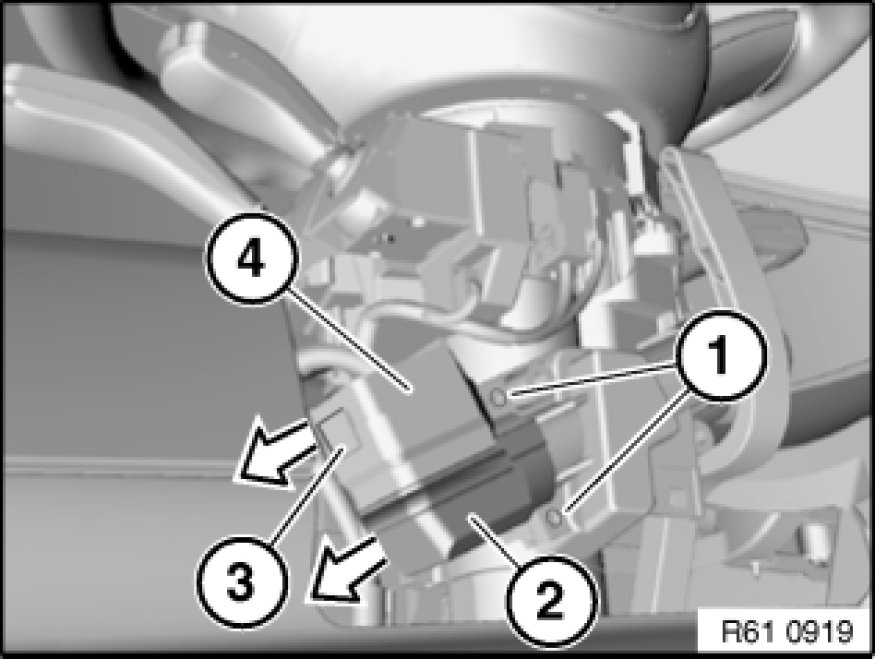

Ignition Switch: Service and Repair
61 31 020 - Removing and installing/replacing ignition starter switch

Necessary preliminary tasks:
- Disconnect battery negative lead Disconnecting and Connecting Battery Negative Lead
- Remove lower section of steering column trim Removing and Installing/Replacing Lower Section of Steering Column Trim

Remove sealing varnish and release headless setscrews (1).
Detach ignition starter switch (2) in direction of arrow.
Installation:
Secure headless setscrews (1) with sealing varnish.
Open lock (3) in direction of arrow and disconnect plug (4) from ignition starter switch (2).